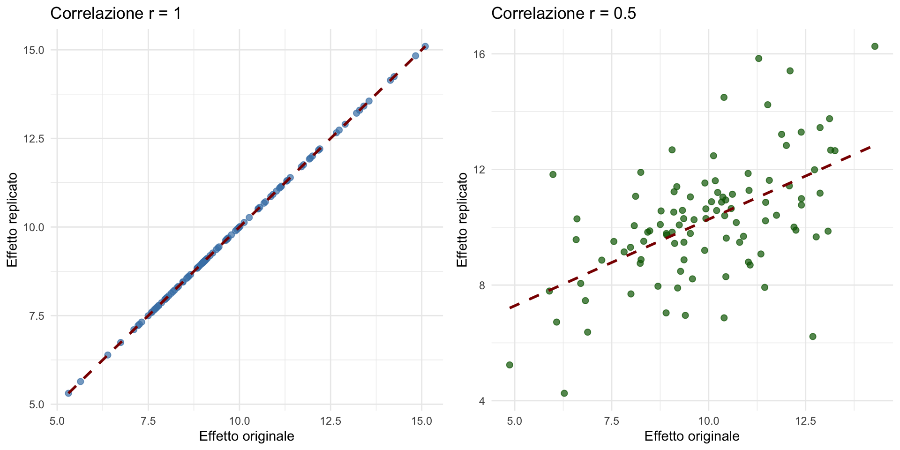

Dalla crisi della replicabilità a una psicologia più solida
Storia, cause profonde e soluzioni concrete
![]()
29 ottobre 2026
Dove eravamo rimasti
Il messaggio della lezione precedente
Nella prima lezione abbiamo visto che la crisi della replicabilità non è un problema accademico astratto.
È un problema che riguarda direttamente la vostra futura pratica professionale:
- ogni intervento terapeutico che sceglierete,
- ogni report che scriverete,
- ogni diagnosi che formulerete
si basa su conoscenze derivate dalla ricerca empirica.
Il punto di partenza
Abbiamo visto tre scenari concreti in cui la fragilità dell’evidenza empirica diventa un problema professionale reale:
- scenario clinico: applicare protocolli basati su studi non replicati;
- scenario organizzativo: promettere risultati che non si replicano;
- scenario diagnostico: decidere sul singolo paziente con dati rumorosi.
La domanda inevitabile
Oggi ci chiediamo:
Come siamo arrivati a questo punto?
Cosa non ha funzionato nel modo in cui abbiamo fatto ricerca?
E soprattutto: qual è la via d’uscita?
Per rispondere, dobbiamo fare un passo indietro e capire le cause profonde della crisi — non solo i sintomi.
Tre livelli di controllo scientifico
Un framework necessario
Prima di analizzare la crisi, dobbiamo distinguere tre livelli diversi di controllo scientifico che vengono spesso confusi tra loro.
Questa distinzione è fondamentale per capire dove si trova il problema e come affrontarlo.
Livello 1: Riproducibilità (Reproducibility)
La domanda fondamentale è:
se utilizzo gli stessi dati e lo stesso codice, ottengo gli stessi risultati?
- È il livello più basilare e tecnico.
- Riguarda errori di codice, mancanza di documentazione e assenza di materiali condivisi.
- È un prerequisito minimo per qualsiasi discussione scientifica.
Esempio di riproducibilità
Un ricercatore pubblica uno studio sull’efficacia di un intervento cognitivo-comportamentale.
I dati e gli script sono disponibili su OSF (Open Science Framework).
Voi scaricate tutto, rilanciate le analisi e ottenete:
- gli stessi valori di t, F, p,
- gli stessi grafici,
- le stesse conclusioni numeriche.
👉 Questa è la riproducibilità: il calcolo è trasparente e verificabile.
Il problema della non-riproducibilità
Se un risultato non è riproducibile, il problema è a monte:
- errori nel codice,
- mancanza di documentazione delle scelte analitiche,
- dati o materiali non disponibili,
- passaggi “manuali” non documentati.
La non-riproducibilità rende impossibile distinguere tra un risultato genuino e un artefatto computazionale.
Livello 2: Robustezza (Robustness)
La domanda è:
se modifico alcune scelte analitiche ragionevoli sugli stessi dati, il risultato regge?
- I dati sono gli stessi, ma cambiano:
- criteri di esclusione dei valori anomali,
- trasformazioni delle variabili,
- specificazioni del modello statistico,
- metodi di stima.
Esempio di robustezza
Uno studio mostra un effetto Stroop significativo usando un modello lineare standard (OLS).
Ma cosa succede se:
- usiamo un modello robusto che gestisce meglio gli outlier?
- trasformiamo i tempi di reazione con il logaritmo?
- escludiamo i trial con RT < 200ms invece di < 150ms?
- usiamo un modello misto che tiene conto della variabilità tra soggetti?
Se l’effetto scompare con scelte ragionevoli, è fragile — dipende da decisioni arbitrarie.
Il “garden of forking paths”
Gelman & Loken (2014) hanno coniato questa metafora:
Ogni analisi di dati comporta innumerevoli scelte — dall’esclusione di valori anomali alla specificazione del modello.
- Ogni scelta apre un “sentiero” diverso nel “giardino”.
- Molte di queste scelte sono ragionevoli ma arbitrarie.
- Spesso non sono esplicitate nei paper pubblicati.
Il risultato pubblicato è uno dei tanti risultati possibili — quello che il ricercatore ha deciso di mostrare.
Il legame con i valori-\(p\)
Il problema del “garden of forking paths” si intreccia con l’uso dei valori-\(p\):
- se provo diverse specificazioni fino a ottenere p < .05,
- sto di fatto p-hacking — anche se non intenzionalmente,
- perché sto selezionando il “sentiero” che porta al risultato “significativo”.
Questo spiega perché molti risultati “significativi” non si replicano: sono il prodotto di scelte analitiche flessibili, non di effetti reali.
Livello 3: Replicabilità (Replicability)
La domanda cruciale di questo livello è:
se un nuovo studio, indipendente dal primo, raccogliesse nuovi dati, il presunto effetto si ripresenterebbe?
- Si coinvolge un nuovo campione di partecipanti.
- Spesso si utilizzano contesti, strumenti o ricercatori diversi.
- È il test più severo che un fenomeno possa superare per dimostrare la propria realtà al di là dei risultati iniziali.
👉 La replicabilità è il fondamento su cui poggia ogni affermazione scientifica solida, considerato il gold standard della scienza empirica.
Perché la replicabilità è cruciale
Un risultato può essere:
- riproducibile (il calcolo è corretto) ma non robusto (dipende da scelte analitiche specifiche);
- robusto nel dataset originale ma non replicabile (l’effetto era dovuto a caratteristiche specifiche di quel campione).
Solo la replicabilità dimostra che un effetto è generalizzabile — cioè che rappresenta un fenomeno psicologico reale, non un artefatto del campione o del contesto.
La gerarchia dei controlli
┌─────────────────────────────────┐
│ REPLICABILITÀ │ ← Gold standard
│ (nuovi dati) │
└─────────────────────────────────┘
↑
┌─────────────────────────────────┐
│ ROBUSTEZZA │ ← Resistenza a scelte analitiche
│ (stessi dati, analisi diverse)│
└─────────────────────────────────┘
↑
┌─────────────────────────────────┐
│ RIPRODUCIBILITÀ │ ← Prerequisito minimo
│ (stessi dati, stesso codice) │
└─────────────────────────────────┘Ogni livello superiore presuppone quello inferiore ma aggiunge nuove sfide.
I numeri della crisi
Open Science Collaboration (2015)
Il progetto più emblematico della crisi:
- 100 studi da riviste top di psicologia (JPSP, JEP, Psych Science);
- repliche dirette con campioni più grandi;
- protocollo preregistrato per evitare flessibilità analitica.
I risultati
- Solo 36% delle repliche ha prodotto un effetto significativo nella stessa direzione dell’originale.
- Tra gli effetti che si sono replicati, la dimensione era in media la metà di quella originale.
- La correlazione tra dimensioni dell’effetto originali e replicate era r = .52 — sostanziale, ma lontana dalla perfetta concordanza.

Cosa significa questo?
Non significa che “la psicologia non funziona”.
Significa qualcosa di più sottile e preoccupante:
Non sappiamo con certezza quali risultati siano solidi e quali no.
Alcuni effetti — come lo Stroop, l’effetto di ancoraggio — si sono replicati perfettamente.
Altri — inclusi alcuni insegnati nei manuali — si sono rivelati molto più fragili di quanto si pensasse.
Many Labs e altri progetti
Il quadro è stato confermato da progetti successivi:
- Many Labs 1 (Klein et al., 2014): 13 effetti replicati in 36 laboratori
- Tasso di replicazione: ~60-70%
- Many Labs 2 (Klein et al., 2018): 28 effetti in 125 campioni
- Tasso di replicazione: ~50%
- Camerer et al. (2018): 21 studi di economia sperimentale
- Tasso di replicazione: ~60%
- Dimensioni dell’effetto: ~66% dell’originale
Il pattern generale
Attraverso tutti questi progetti emerge un pattern coerente:
- I tassi di replicazione variano tra il 50% e il 70%.
- Quando un effetto si replica, è sistematicamente più piccolo dell’originale (60-70% della dimensione).
- La variabilità tra laboratori è spesso molto maggiore di quanto suggerito dagli studi originali.
Una crisi che va oltre la psicologia
Baker (2016) — sondaggio su ~1500 scienziati di diverse discipline:
- ~90% ritiene che esista un problema di riproducibilità nella propria disciplina;
- >50% lo considera un problema grave;
- >70% ha tentato e fallito di replicare uno studio altrui;
- >50% ha fallito di replicare i propri studi.
Psicologia: pioniera nel riconoscere il problema
La psicologia non è un’eccezione negativa — anzi.
È stata tra le prime discipline a:
- riconoscere sistematicamente il problema,
- organizzare grandi progetti di replicazione,
- avviare il movimento Open Science,
- ripensare le pratiche di ricerca e pubblicazione.
Questo riconoscimento è un segno di maturità scientifica, non di debolezza.
Come ci siamo arrivati?
2005: Il saggio di Ioannidis
John Ioannidis pubblica “Why Most Published Research Findings Are False”.
La tesi: con
- campioni piccoli,
- flessibilità analitica,
- uso distorto del valore-\(p\),
- incentivi alla novità,
diventa strutturalmente probabile pubblicare falsi positivi.
Il modello matematico di Ioannidis
Ioannidis dimostra che la probabilità che un risultato “significativo” sia falso dipende da tre fattori:
- PPR (Pre-study Probability Ratio): quanto è plausibile l’ipotesi a priori,
- Power (1-β): la potenza statistica dello studio,
- α: il livello di significatività (di solito 0.05).
E da un fattore cruciale spesso ignorato:
- Bias: la probabilità di pubblicare un risultato “significativo” anche quando è falso (p-hacking, selective reporting, etc.).
Un esempio numerico
Consideriamo uno studio con:
- PPR = 0.1 (solo il 10% delle ipotesi è vera),
- Power = 0.8,
- α = 0.05,
- Bias = 0.3.
La probabilità predittiva positiva (la probabilità che un risultato “significativo” sia vero) è:
\[\text{PPV} = \frac{(1-\beta) \times R}{(1-\beta) \times R + \alpha}\] dove \(R\) è il PPR e β è il tasso di falsi negativi.
In questo scenario: PPV ≈ 0.14 — cioè l’86% dei risultati “significativi” sono falsi.
L’impatto del paper
Il paper di Ioannidis è stato estremamente influente:
- ha dimostrato matematicamente perché la letteratura è distorta;
- ha anticipato i risultati dei progetti di replicazione;
- ha innescato un dibattito sulla riforma delle pratiche di ricerca.
Ma all’epoca molti pensavano che il problema fosse teorico o limitato ad alcune aree.
2011: L’anno della svolta
Il 2011 è stato l’annus horribilis della psicologia — l’anno in cui la crisi è diventata innegabile.
Caso 1: Daryl Bem e la precognizione
Bem pubblica su JPSP (rivista top) 9 studi che “dimostrano” la precognizione:
- gli studenti indovinano la posizione futura di immagini erotiche meglio del caso;
- tutti i risultati sono “significativi” (p < .05);
- il paper passa la peer review.
Problema: la precognizione viola le leggi della fisica.
Implicazione: se con i metodi standard posso “dimostrare” un fenomeno impossibile, c’è qualcosa di profondamente sbagliato nei metodi.
Cosa era successo?
Analisi successive hanno rivelato QRP (Questionable Research Practices) diffuse:
- Optional stopping: raccogliere dati fino a ottenere p < .05.
- Flessibilità analitica: provare diverse analisi, riportare quella che “funziona”.
- Selective reporting: omettere condizioni o misure che non hanno dato risultati.
Nessuna di queste pratiche è frode — ma distorce sistematicamente i risultati verso i falsi positivi.
Replicare i risultati di Bem
Numerosi laboratori hanno tentato di replicare Bem:
- Galak et al. (2012): 7 repliche dirette — nessuna significativa.
- Ritchie et al. (2012): 3 repliche — nessuna significativa.
- Meta-analisi successive: effetto vicino allo zero.
La “precognizione” di Bem era un artefatto di pratiche di ricerca problematiche, non un fenomeno reale.
Caso 2: Diederik Stapel
Nello stesso anno emerge lo scandalo Stapel:
- Professore di fama internazionale all’Università di Tilburg.
- 58 articoli basati su dati fabbricati.
- Frodi sistematiche per oltre un decennio.
È un caso estremo di frode scientifica — ma ha rivelato vulnerabilità sistemiche:
- assenza di open data;
- fiducia cieca nell’autorità accademica;
- scarsi controlli istituzionali.
Caso 3: Simmons, Nelson & Simonsohn
Sempre nel 2011, Simmons et al. pubblicano “False-Positive Psychology”:
Dimostrano quanto sia facile ottenere p < .05 con flessibilità analitica.
Esperimento provocatorio: “dimostrano” che ascoltare “When I’m Sixty-Four” dei Beatles ringiovanisce di 1.5 anni (\(p\) = .04).
Come hanno fatto?
Con pratiche comunissime ma problematiche:
- raccogliere dati in modo sequenziale e fermarsi quando \(p\) < .05;
- misurare diverse variabili dipendenti e riportare quella che “funziona”;
- includere/escludere covariate a seconda del risultato;
- decidere le esclusioni dopo aver visto i dati.
Risultato: con 4 “gradi di libertà” analitici, il tasso di falsi positivi sale da 5% a 60%.
Il messaggio di Simmons et al.
“Non serve malafede — bastano incentivi distorti e strumenti fragili.”
I ricercatori non sono “evil” — sono esseri umani che:
- operano in un sistema che premia i risultati “positivi”,
- hanno bias cognitivi naturali (bias di conferma, hindsight bias),
- usano strumenti statistici che permettono grande flessibilità.
2012: John et al. — quanto sono diffuse le QRP?
John et al. (2012) conducono un sondaggio anonimo su ricercatori di psicologia:
Risultati scioccanti:
- >50% ammette di aver fatto uso di almeno una QRP;
- 35% ha riportato solo gli studi che “hanno funzionato”;
- 22% ha concluso la raccolta dati dopo aver ottenuto \(p\) < .05;
- 63% ha deciso di escludere dati dopo aver visto il loro impatto sui risultati.
Le QRP non sono eccezioni — sono la norma.
Le cause profonde
Causa 1: Il sistema di incentivi
Publish or perish
Il sistema accademico premia:
- quantità di pubblicazioni su riviste ad alto impact factor.
- tisultati “positivi” e “sorprendenti”.
- novità rispetto alla replicazione.
Il sistema penalizza:
- studi con risultati nulli.
- repliche (viste come “non originali”).
- studi di metodologia o sviluppo di strumenti.
Le conseguenze
Questo crea una pressione enorme sui ricercatori:
- se i tuoi studi non “funzionano”, non pubblichi.
- se non pubblichi, non ottieni tenure o finanziamenti.
- la carriera dipende da \(p\) < .05.
Questa pressione incentiva — anche inconsciamente — l’uso di QRP per “aiutare” i dati a diventare “significativi”.
Causa 2: Bias cognitivi
I ricercatori sono esseri umani, non macchine neutrali.
Sono soggetti a:
- bias di conferma: tendenza a cercare evidenze che confermano le proprie ipotesi.
- hindsight bias: “lo sapevo che sarebbe andata così”.
- apophenia: vedere pattern nel rumore casuale.
Il problema dello “story-telling” scientifico
Gli articoli scientifici tendono a presentare la ricerca come una narrazione lineare e coerente:
“Abbiamo formulato l’ipotesi che \(X\) influenzi \(Y\). Abbiamo progettato uno studio per testarla. I risultati confermano l’ipotesi.”
Tuttavia, la pratica reale della ricerca è molto più complessa e meno lineare:
- si esplorano ipotesi alternative o concorrenti;
- si sperimentano diverse strategie analitiche;
- si riformulano modelli alla luce dei dati;
- si interpretano a posteriori risultati inattesi.
La narrazione finale, ordinata e coerente, tende a semplificare retrospettivamente questo processo, attenuando l’incertezza, le deviazioni e le revisioni che hanno caratterizzato il percorso reale.
Il rischio è quello di produrre un’illusione di inevitabilità e di solidità inferenziale maggiore di quella che è effettivamente giustificata dai dati.
Causa 3: Bias di pubblicazione
The file-drawer problem
Rosenthal (1979) ha coniato questo termine:
Per ogni studio pubblicato con risultati “positivi”, quanti studi con risultati nulli rimangono nel “cassetto” (file drawer)?
Se solo gli studi con \(p\) < .05 vengono pubblicati, la letteratura diventa una selezione distorta — ovvero, non rappresenta la realtà dei fenomeni.
I numeri
Franco et al. (2014) hanno analizzato studi pre-registrati nel Time-sharing Experiments for the Social Sciences (una piattaforma finanziata dalla NSF che permetteva ai ricercatori di condurre esperimenti su campioni della popolazione con pre-registrazione obbligatoria):
- studi con risultati forti → 60% probabilità di essere pubblicati;
- studi con risultati nulli → 20% probabilità;
- studi con risultati misti → 40% probabilità.
Il bias di pubblicazione è reale e sostanziale.
Le conseguenze per le meta-analisi
Se la letteratura pubblicata contiene principalmente falsi positivi e effetti sovrastimati:
- le meta-analisi — che dovrebbero sintetizzare l’evidenza — diventano sintesi di artefatti;
- gli effect size medi sono sovrastimati;
- le raccomandazioni pratiche basate su meta-analisi sono distorte.
Questo ha implicazioni dirette per la pratica clinica e le linee guida basate sull’evidenza.
Causa 4: Campioni piccoli e bassa potenza
Il problema della potenza statistica
La potenza statistica è la probabilità di rilevare un effetto se esiste davvero.
Cohen (1962) raccomandava potenza ≥ 80%.
Realtà in psicologia:
- potenza mediana in psicologia: ~35-50% (Bakker et al., 2012; Smaldino & McElreath, 2016).
- cioè: anche se l’effetto esiste, abbiamo meno del 50% di probabilità di rilevarlo.
Il “winner’s curse”
Quando uno studio ha bassa potenza statistica ma produce un risultato significativo, emerge un paradosso:
l’effetto osservato è quasi sicuramente una sovrastima dell’effetto reale.
Perché accade?
Con potenza bassa:
- solo gli studi in cui la variabilità campionaria amplifica casualmente l’effetto riescono a superare la soglia di significatività;
- gli studi in cui l’effetto stimato è più vicino al valore reale (o più piccolo) non risultano significativi;
- questi ultimi hanno minori probabilità di essere pubblicati.
Il risultato è una selezione sistematica degli studi con stime gonfiate.
Non vengono pubblicati gli studi “tipici”, ma quelli “fortunati”.
Un esempio simulato
Immaginiamo che:
- l’effetto vero sia Cohen’s \(d = 0.5\) (effetto medio);
- conduciamo uno studio con N = 20 per gruppo (potenza ≈ 30%);
- ripetiamo lo studio 100 volte.
Cosa succede?
- Solo circa 30 studi produrranno \(p < .05\).
- Questi studi non avranno \(d ≈ 0.5\), ma tipicamente \(d ≈ 0.8–1.0\).
- Gli altri 70 studi, più vicini al valore reale, non verranno pubblicati.
- La letteratura risultante suggerirà un effetto grande, quando in realtà è medio.
Implicazione
Il winner’s curse non è un errore statistico, ma una conseguenza strutturale della co-presenza di:
- bassa potenza,
- soglia di significatività,
- bias di pubblicazione.
La letteratura scientifica tende così a contenere effetti sistematicamente inflazionati, soprattutto nei primi studi su un fenomeno.
Causa 5: Problemi di misurazione
La sfida dei costrutti latenti
In psicologia misuriamo costrutti latenti (non osservabili direttamente):
- ansia,
- intelligenza,
- personalità,
- atteggiamenti.
Ogni misurazione è indiretta e imperfetta:
- contiene errore,
- può essere distorta da fattori confondenti,
- la validità e l’affidabilità sono spesso limitate.
Scale poco validate
- Molte scale psicologiche hanno proprietà psicometriche deboli.
- Vengono spesso modificate ad hoc per studi specifici.
- La validazione è costosa e richiede tempo — spesso viene saltata.
Conseguenza:
se misuriamo male, è difficile replicare — indipendentemente dalla qualità dei metodi statistici.
Esempio: “P-hacking the scale”
Uno studio mostra risultati non significativi con una scala a 10 item.
Il ricercatore:
- prova diverse combinazioni di item;
- o esclude item che “non funzionano”;
- fino a ottenere \(p\) < .05.
Questo è QRP applicato alla misurazione — e distorce i risultati tanto quanto il QRP analitico.
La risposta: Open Science
Un cambiamento culturale profondo
La crisi ha innescato quello che Miguel et al. (2014) chiamano “Credibility Revolution” in psicologia.
Non è solo una questione di nuove tecniche — è un cambiamento nella cultura della ricerca.
Pilastro 1: Preregistrazione
Cos’è la preregistrazione?
Prima di raccogliere i dati, il ricercatore dichiara pubblicamente:
- le ipotesi specifiche da testare;
- il disegno di ricerca (campione, procedure);
- il piano di analisi dettagliato (quali test, quali esclusioni, quali trasformazioni).
Questo viene time-stamped e reso pubblico (es. su OSF, AsPredicted).
Perché funziona?
La preregistrazione elimina il “garden of forking paths”:
- le decisioni analitiche sono prese prima di vedere i dati;
- non è possibile “cherry-pick” l’analisi che produce p < .05;
- le analisi esplorative (non preregistrate) sono chiaramente etichettate come tali.
Questo non elimina l’esplorazione — la rende onesta e trasparente.
Evidenza dell’efficacia
Scheel et al. (2021) hanno analizzato Registered Reports:
- prima della preregistrazione: 96% degli studi confermavano l’ipotesi;
- dopo la preregistrazione: 44% confermavano l’ipotesi.
Questo suggerisce che circa la metà dei risultati “positivi” senza pre-registrazione erano probabilmente artefatti di QRP.
Pilastro 2: Open Data e Open Materials
Cosa significa “open”?
Open Data: i dati grezzi (de-identificati) sono pubblicamente disponibili.
Open Materials: procedure, stimoli, questionari sono pubblicamente disponibili.
Open Code: gli script di analisi sono disponibili.
Questo permette:
- verifica della riproducibilità;
- re-analisi con metodi diversi (robustezza);
- meta-analisi più accurate;
- repliche dirette fedeli all’originale.
Le resistenze
Molti ricercatori sono riluttanti a condividere i dati per vari motivi:
- timore di essere “scoopati” (qualcuno pubblica prima usando i loro dati);
- preoccupazioni per la privacy dei partecipanti;
- timore che errori vengano scoperti;
- semplicemente: abitudine e inerzia.
Ma queste resistenze stanno diminuendo — sempre più riviste e finanziatori richiedono l’open data.
Pilastro 3: Registered Reports
Un nuovo formato di pubblicazione
I Registered Reports invertono il processo di peer review:
Fase 1 - Review del protocollo:
- gli autori sottomettono introduzione + metodi (senza dati);
- la rivista valuta la domanda di ricerca e il disegno;
- se accettato → in-principle acceptance (pubblicazione garantita).
Fase 2 - Review dei risultati:
- gli autori raccolgono i dati seguendo il protocollo;
- sottomettono risultati + discussione;
- pubblicazione indipendente dai risultati (positivi, negativi, nulli).
Perché è rivoluzionario?
I Registered Reports eliminano il bias di pubblicazione:
- gli studi sono accettati prima di conoscere i risultati;
- studi con risultati nulli vengono pubblicati;
- le decisioni analitiche sono blindate rispetto ai dati.
Oltre 300 riviste ora offrono questo formato (incluse riviste top come Nature Human Behaviour e Psychological Science).
Pilastro 4: Progetti multi-laboratorio
L’idea
Invece di un singolo laboratorio che conduce uno studio:
- decine di laboratori indipendenti;
- conducono lo stesso studio contemporaneamente;
- con protocollo standardizzato;
- i risultati vengono aggregati.
Esempi: Many Labs, Psych Science Accelerator, ManyBabies.
I vantaggi
- Campioni enormi (N spesso > 1000).
- Diversità di contesti, culture, popolazioni.
- Stima della variabilità tra laboratori.
- Trasparenza totale (tutto è preregistrato e open).
Questo è il gold standard per stabilire se un effetto è robusto e generalizzabile.
Dove siamo ora?
Negli ultimi 10 anni la psicologia ha fatto progressi enormi:
- molte riviste top ora richiedono o incentivano open data, preregistrazione;
- i Registered Reports stanno diventando mainstream;
- le QRP sono riconosciute e discusse apertamente;
- la formazione dei giovani ricercatori include Open Science.
Ma il cambiamento culturale è lento — e non uniforme.
Il ruolo chiave dell’inferenza bayesiana
Perché Bayes emerge ora?
L’Open Science affronta le pratiche di ricerca.
Ma c’è anche un problema concettuale più profondo:
il paradigma frequentista — basato su test di ipotesi nulle e valore-\(p\) — è strutturalmente inadeguato per molte domande psicologiche.
Il cuore del problema: il valore-\(p\)
Il valore-\(p\) corrisponde a:
\[P(\text{dati o più estremi} \mid H_0 \text{ vera}).\]
Ma la domanda che interessa ai ricercatori è:
\[P(H_0 \text{ vera} \mid \text{dati}).\]
O meglio ancora:
\[P(\text{ipotesi} \mid \text{dati}).\]
La confusione dei p-value
Il valore-\(p\) non è:
- la probabilità che H₀ sia vera;
- la probabilità che l’effetto sia reale;
- la probabilità che i risultati siano “dovuti al caso”.
Eppure molti ricercatori — e quasi tutti gli studenti — interpretano i valori-\(p\) in questo modo.
Le conseguenze
Questa confusione alimenta:
- decisioni binarie (significativo/non significativo);
- ossessione per p < .05;
- fragilità inferenziale (piccole differenze nei dati portano a conclusioni opposte);
- mancata quantificazione dell’incertezza.
L’approccio bayesiano: un cambio di paradigma
L’idea centrale
L’inferenza bayesiana combina:
- conoscenza a priori (quello che sappiamo dalla letteratura, dalla teoria, dall’esperienza),
- dati osservati (nuova evidenza),
per produrre:
\[P(\text{parametri} \mid \text{dati}).\]
Il teorema di Bayes
\[ P(\theta \mid \text{dati}) = \frac{P(\text{dati} \mid \theta) \times P(\theta)}{P(\text{dati})}. \]
In parole:
la credenza a posteriori è proporzionale alla verosimiglianza dei dati moltiplicata per la credenza a priori.
Vantaggi 1: Probabilità diretta delle ipotesi
Con Bayes otteniamo direttamente:
- \(P(H_1 \mid \text{dati})\) — la probabilità che l’ipotesi sia vera;
- non solo: otteniamo una distribuzione di probabilità su tutti i valori possibili dei parametri.
Questo risponde esattamente alla domanda che i ricercatori si pongono.
Vantaggi 2: Niente verdetti, ma distribuzioni
L’output bayesiano non è un verdetto (p < .05 → “significativo”)
È una distribuzione di probabilità che mostra:
- dove è più probabile che si trovi l’effetto vero;
- quanto siamo incerti;
- quali valori sono più o meno credibili.
Esempio
Invece di dire “p = .03”, diciamo
“c’è una probabilità del 95% che l’effetto sia tra 0.2 e 0.8, con il valore più credibile intorno a 0.5”.
Vantaggi 3: Intervalli credibili
- Gli intervalli di confidenza frequentisti sono difficili da interpretare:
- “Se ripetessimo lo studio infinite volte, il 95% degli intervalli conterrebbe il vero parametro”.
- Gli intervalli credibili bayesiani sono intuitivi:
- “C’è una probabilità del 95% che il parametro sia in questo intervallo”.
Gli intervalli di credibilità dicono quello che tutti pensano (erroneamente) che gli intervalli di confidenza dicano.
Vantaggi 4: Cumulatività della conoscenza
Nel paradigma frequentista, ogni studio ricomincia da zero:
- Si testa sempre H₀ come se non sapessimo niente.
Nel paradigma bayesiano, la conoscenza è cumulativa:
- il risultato di oggi diventa la prior di domani;
- la scienza procede per aggiornamenti successivi.
Esempio: studio di replicazione
Studio 1: effetto stimato = 0.5, con intervallo [0.2, 0.8].
Studio 2 (replicazione bayesiana):
- usiamo la posteriore dello Studio 1 come prior per lo Studio 2;
- raccogliamo nuovi dati;
- aggiorniamo la credenza.
Risultato: stima più precisa che integra formalmente entrambi gli studi.
Vantaggi 5: Piccoli campioni e incertezza
Con campioni piccoli, i metodi bayesiani:
- producono stime più stabili grazie alla regolarizzazione (la prior “ancora” le stime);
- quantificano l’incertezza in modo realistico (gli intervalli di credibilità sono più larghi con meno dati);
- non producono falsa confidenza (come p < .05 con N = 15).
Vantaggi 6: Modelli gerarchici
I modelli bayesiani gerarchici (multilevel) permettono di:
- modellare la variabilità tra soggetti e tra contesti;
- pooling parziale dell’informazione (compromesso tra complete pooling e no pooling);
- generalizzare meglio a nuovi contesti.
Questo è cruciale per la replicabilità: ci dice non solo “l’effetto medio”, ma “quanta variabilità c’è?”.
Vantaggi 7: Trasparenza forzata
Per fare un’analisi bayesiana, devo esplicitare:
- la mia prior (cosa pensavo prima dei dati?);
- il modello generativo (come penso che i dati siano stati generati?);
- tutte le assunzioni.
Questo rende l’analisi più trasparente, criticabile e replicabile.
Cosa Bayes NON risolve
È fondamentale essere onesti: Bayes non è una panacea.
Non salva:
- strumenti di misura inadeguati — se il questionario non è valido, nessun metodo statistico lo corregge;
- disegni di ricerca mal concepiti — bias di selezione, confounding, assenza di controllo rimangono problemi;
- teorie vaghe — modelli sofisticati applicati a ipotesi vaghe producono risultati vaghi.
Le sfide dell’approccio bayesiano
- Curva di apprendimento: è più complesso del “premi bottone e guarda il valore-\(p\)”.
- Scelta della prior: richiede giustificazione e può essere fonte di dibattito.
- Costo computazionale: i modelli bayesiani richiedono simulazioni (MCMC) che sono lente.
- Interpretazione: richiede pensare in termini di distribuzioni, non di “sì/no”.
Il valore aggiunto: pensare, non solo calcolare
L’inferenza bayesiana ti costringe a pensare.
- Ti costringe a esplicitare le tue assunzioni.
- Ti costringe a quantificare l’incertezza.
- Ti costringe a integrare evidenze da fonti diverse.
- Ti costringe a distinguere esplorazione da conferma.
Più che una tecnica statistica, è un framework per un ragionamento più rigoroso.
Verso una pratica professionale più solida
Il messaggio per voi, futuri psicologi
Questo corso vi insegnerà l’inferenza bayesiana — ma l’obiettivo non è farvi diventare statistici.
- L’obiettivo è rafforzare la vostra preparazione professionale.
Competenza 1: Valutare l’evidenza
Alla fine del corso saprete:
- distinguere un risultato solido da uno fragile;
- riconoscere i red flags nella letteratura (campioni piccoli, p-hacking, QRP);
- valutare se uno studio è riproducibile, robusto, replicabile.
Questo vi renderà consumatori critici della ricerca — fondamentale per una pratica evidence-based.
Competenza 2: Gestire l’incertezza
Nella pratica professionale lavorerete sempre con incertezza:
- i test diagnostici hanno errore di misura;
- i protocolli terapeutici hanno efficacia variabile;
- ogni paziente è unico.
Bayes vi insegna a quantificare questa incertezza e a ragionare con essa.
Competenza 3: Integrare evidenza generale e individuale
Il ragionamento bayesiano formalizza quello che gli psicologi già fanno intuitivamente:
“La letteratura dice X, ma nel mio paziente osservo Y. Come integro queste due informazioni?”
Questo è esattamente quello che fa il teorema di Bayes: combina prior (letteratura) e likelihood (dati del paziente) per produrre una posteriore (conclusione aggiornata).
Competenza 4: Comunicare con rigore
Sapere usare metodi rigorosi e trasparenti vi rende credibili:
- nei report per le organizzazioni;
- nelle presentazioni per qualsiasi audience;
- nei confronti con altri professionisti;
- nelle pubblicazioni scientifiche.
In un mondo sempre più consapevole della crisi della replicabilità, saper “fare le cose per bene” è un vantaggio competitivo.
Il collegamento con Open Science
Questo corso integra metodi bayesiani e Open Science:
- imparerete a preregistrare le vostre analisi;
- imparerete a rendere le vostre analisi riproducibili (R, Quarto);
- imparerete a documentare le vostre scelte analitiche;
- imparerete a condividere dati e codice.
Queste sono le competenze che definiscono la nuova generazione di ricercatori.
Il percorso del corso
Da dove partiamo
Questo corso parte dall’idea che non servono basi matematiche avanzate per ragionare correttamente con l’incertezza.
Servono:
- concetti chiari;
- capacità di usare strumenti computazionali (R);
- pratica con dati reali.
Il flusso del corso
Fase 1 - Fondamenta (settimane 1-3):
- Statistica esplorativa e visualizzazione
- Probabilità come linguaggio dell’incertezza
- Simulazione computazionale
Fase 2 - Inferenza bayesiana (settimane 4-8):
- Il teorema di Bayes
- Prior, likelihood, posterior
- Modelli bayesiani semplici (proporzioni, medie)
Fase 3 - Regressione bayesiana (settimane 9-11):
- Modelli lineari bayesiani
- Interpretazione e diagnostica
- Confronto tra modelli
Fase 4 - Approfondimenti (settimane 12-13):
- Modelli multilivello (cenni)
- Workflow completo di analisi bayesiana
- Applicazioni a casi reali
Come lavoreremo
- Tutto in R e RStudio — la programmazione è il mezzo, non il fine.
- Enfasi sui concetti, non sulla matematica formale.
- Homework settimanali per praticare.
- Materiali online liberamente accessibili e modificabili.
- All’esame potrete usare il vostro formulario e i vostri snippet di codice.
Lo scopo è la comprensione non la memorizzazione.
Cosa vi porterete via
Alla fine di questo corso, sarete psicologi con:
- una comprensione chiara di cosa significa incertezza e come quantificarla;
- la capacità di valutare criticamente la letteratura scientifica;
- le competenze per condurre analisi rigorose e trasparenti;
- gli strumenti per trarre conclusioni difendibili nella pratica professionale.
L’investimento che state facendo
Questo corso è impegnativo:
- richiede tempo (materiali da leggere, codice da eseguire, homework da fare);
- richiede sforzo cognitivo (concetti nuovi, modi di pensare diversi);
- richiede tolleranza dell’incertezza (non ci saranno “risposte giuste” semplici).
Ma questo investimento rafforza la vostra preparazione professionale in modo che nessun altro corso può fare.
Il messaggio finale
La crisi della replicabilità non è la fine della psicologia.
- È un segno di maturità scientifica — la disciplina sta riconoscendo i propri limiti e sta costruendo fondamenta più solide.
- Voi state entrando in psicologia in un momento di trasformazione — e questo corso vi dà gli strumenti per partecipare in maniera attiva a questa trasformazione, senza essere solo spettatori passivi.
Collegamento alla prossima lezione
Dove andiamo ora
Oggi abbiamo visto:
- perché serve un cambio di approccio;
- come siamo arrivati alla crisi;
- quali sono le soluzioni (Open Science + Bayes).
Dal prossimo incontro iniziamo il “come fare”:
- introduzione pratica a R e RStudio;
- importare dati;
- esplorare distribuzioni;
- visualizzare incertezza.
Passo dopo passo, costruiremo gli strumenti per fare inferenza bayesiana.
Per approfondire
Sulla crisi della replicabilità
Nel companion del corso:
Letture fondamentali
Open Science Collaboration (2015). Estimating the reproducibility of psychological science. Science, 349(6251).
Ioannidis, J. P. A. (2005). Why most published research findings are false. PLoS Medicine, 2(8), e124.
Simmons, Nelson & Simonsohn (2011). False-positive psychology. Psychological Science, 22(11), 1359-1366.
Gelman & Loken (2014). The garden of forking paths: Why multiple comparisons can be a problem, even when there is no “fishing expedition” or “p-hacking” and the research hypothesis was posited ahead of time. Department of Statistics, Columbia University, 348(1-17), 3.
Sul movimento Open Science
Nosek et al. (2015). Promoting an open research culture. Science, 348(6242), 1422-1425.
Munafò et al. (2017). A manifesto for reproducible science. Nature Human Behaviour, 1, 0021.
Sull’inferenza bayesiana applicata
McElreath, R. (2020). Statistical Rethinking (2nd ed.). CRC Press.
Kruschke, J. (2015). Doing Bayesian Data Analysis (2nd ed.). Academic Press.